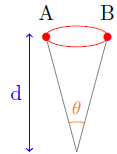

Friedmann-Lemaître universe model
The Friedmann-Lemaître universe pattern responds to the cosmological principle and to general relativity. The cosmological principle postulates that at a given moment, all observables have the same measure at every point and in every direction. In other words, the universe is homogeneous and isotropic. General relativity is a geometrical relativistic theory of gravitation (TGRG) that is to say a theory which relates the geometry of the space-time container to its energy-matter content and which, locally, joins special relativity.
In a TGRG the symmetry of the content has to be in the container. We show that the most general space-time metric which responds to a TCRG and to the cosmological principle is the Robertson Walker (RW) metric or the Freidmann-Lemaitre metric. The square ds2 of the spatio-temporal length element is defined as a metric .The RW one is :
k = -1, 0 or +1 according to the space curvature (3D) : negative, null or positive and r is the radial coordinate.
R(t) is the only unknown besides k.
R(t) function is the "Scaling factor" which multiplies the distance between fixed points of the space. The cosmological time t is uniform throughout the whole space (sources and observers are assumed to be stationary and are as a consequence in the same frame).
Following the trajectory of a photon (ds=0) it is deduced that if a source emits at time te two light signals temporally separated by dte, an observer will receive them at the time t0 temporally separated by dt0 with
Applying the latter to the period or wavelength of the light, this can be written as:The whole differential equation (1917) of Einstein's general relativity can be written as :
If the TCRG is the general relativity, introducing the coefficients (gμν) of dr2, dθ2, dφ2 and dt2 of the RW metric into the Einstein equation they become 2 differential equations (the Friedmann-Lemaître equations, FL1 et FL2) on the scale factor R(t) in which p(t) and ρ(t) (pressure and volumetric mass) are the only two parameters describing the content : p and ρ are spatially homogeneous (not function of r,θ or φ ) according to the cosmological principle.
FL3 can be deduced
FL2 can be written as :
with :
G is the universal gravitational constant.
Ωr(t) is the radiation density parameter. Its current value Ωr0 is best known as the density of light energy and is essentially the cosmological background radiation (RFC) one.We can add to it the energy of primordial neutrinos which are yet to be detected and which with the simplest hypothesis have an energetic density of 68% of the RFC's one.
Ωm(t) is the parameter of matter density (Dark and non baryonic included)
ΩΛ(t) is the density parameter of Λ. We also name it the reduced cosmological constant (but that generally isn't a constant). ΩΛ relies on the cosmological constant Λ introduced in 1917 by Einstein in his equations to make general relativity compatible with is static universe model. We show that we don't modify the Einstein equation if we removed (or cancel) Λ in the left hand side of the equation and if we add to the right hand side an equation of state of a fluid: p = - ρ c2 = - Λc4/8πG. The cosmological constant can be seen as (Lemaître 1934) a physical entity, vacuum energy. It then appears as a particular case of a Dark energy, with the equation of state p = w ρ c2 (with w differing from -1, and can vary) where ΩΛ is the density parameter.In this version of COSMOGRAVE we stay within the framework that has a geometrical constant Λ (or of a vacuum energy), measurements are, in 2016, compatible with w=-1
Ωk(t)is the curvature density parameter or reduced curvature. It relies on k, which represent the universe curvature. if k = 1, the space (3D) is hyper-spherical; if k = 0, it is euclidean (in this case Ωk(t) = 0 ∀ t) and if k = -1, [hyper] hyperbolical.
The density parameters Ωi(t) are dimensionless and the second Friedmann-Lemmaître equation implies that their sum ΣΩi(t) is equal to 1, regardless oft. It suffices to measure three of these at an instant to determine the fourth one. As now Ωr0 is well known and moreover it is less than 10-4, the knowledge of our gravitational model is essentially tied to the measures of Ωm0 and ΩΛ0 .
In the simulation part the choice of the values ofΩm0 and ΩΛ0 is left to the user (with by default the values from the Λ-CDM model results of the Planck mission of 2015 of ESA ). For Ωr0, since the RFC has a black body thermal spectre, it's the temperature T0 which is to be chosen. An option allows one to choose Ωk=0
The columical mass ρr (ρr = ur/c2 with ur the energetic density) of a black body is merely linked to its temperature :
As a default the constant have these values (they can be modified in the simulations: with the multiverse hypothesis they could be different) :
H(t) is the expansion factor, logaritmic derivte of the scale factor. H0 is his current value. His dimmension is the inverseof a time. For historical methods reasons we expressed them in km/s/Mpc.
On a general level, H(t) is define as:
To facilitate the solution of the differential equation, we use the reduced coordinates a = R / R0 and τ = H0(t - t0). With this change, we obtain :
The initial conditions of that equation are given by:
The reduced scale factor evolution a(τ) relies only on Ωm0, Ωr0 and ΩΛ0. With H0 we obtain a(t)
Depending on the chosen values of Ωi , we obtain several models with or without singularities:
The boundary lines of these types of universes (Ωm0, ΩΛ0) are on the left figure (interactive) of the simulation.
Following the path of the photons we can demonstrate that the relations used in cosmograve (particularly in the toolbox "Calculs annexes"). Bellow the equations are shown without demonstration :
The function E(x) emerges in multiple cosmological calculations. It's defined as :
It is then shown:
In the case of a universe with Big Bang, the age of the universe (the elapsed time since the Big Bang) is the result of the following integral:
The comoving distance dm, plays an important role in the relations between the metrics observables (ex : angular diameter), the photometric observables(ex : luminance) and the temporal ones (ex : redshift).
The expression of that metric distance is obtained by the "integration" of a photon trajectory from the instant te of its emission and from the coordinater up to the instant to of its reception at r=0with a cosmological redshift zc.
The generalised expression for the metric distance dm is:
where ,depending of the spatial curvature, Sk is:
The classical photometric measurements (euclidean static space) of the distances is performed with the use of E, the lustre (the way light interacts orthogonally with the surface of the source) and L, the luminosity;. d is the distance between the source and the surface.
If the source is isotropic and the luminous flux is conserved, the following relationship applies:
Having a spatial scale factor R(t) varying throughout the photon's journey, the fundamental observational relation written above would no longer be valid. It relies on the features of the universe and thus on the "density parameters", the expansion rate and the redshift zc of the source (namely the geometrical history of the space that has been travelled)
The distance which preserves the classical expression can be best called the "luminosity distance;" dL. It is written as:
The expression for illuminance in FLRW is then:
Another relation that is useful is the one which relates linear and apparent (angular) diameters. In a classical frame, the angle θ under which the object is observed can be determined peut determined(for d>>D) by observing a fixed object of linear diameterD from a distant point; of distance d, :

Following the smae reasoning as for the "luminosity distance;", it can be shown that in FLRW the "angular diameter distance" dA is:
In FLRW, the angle θ0 under which is observed (today) the object of diameter De (at the instant of emission while De = constant for standards of length) is found to be:
The distance "light-time distance" between an object 1 and an object 2, both stationary, can be determined by the following expression, with t2 > t1 :
if one focuses on comobiles structures, that is to say delimited by points of invariant spatial coordinates, their linear dimensions will vary with the scale factor (thus affecting the redshift) according to the relation :
This presentation, as in the previous versions, relies on the lessons of cosmology made by J-P Cordoni.
Dark Energy model
The shape of the Dark energy is defined by the cosmological state equation w = p/ρ. With the standard case seen before this constant xas equal to -1, Value for which one obtains an expanding universe.
Although this the value for a real cosmological constant w could be affected by values different of -1 in a situtation where the dark energy change with time (ex: Quintessence).
w is usefull to describe the evolution of an istropic universe when she is used in the FLRW equations. We deduce:
where ρ is the density of a perfect fluid and a the reduce scale factor
The relation for the density is:
with a = (1+x)-1
Particular cases other than w=-1 appears when w= 0 or 1/3. For w=0 (1) become . ρ ~ a-3 = 1/V. The energy density goes down with the volum. If w=1/3 (1) become an ultra relativistic equation. ρ ~ a-4.The decrease speed of the energy density would be higher than the universe expansion one.
We write the general form of w which relies on the reduce scale factor of the equation (2). Here, the expression of w is a function of a and of two parameters without units w0, w1.
By inserting (3) in (2) we obtain:
If w0 = -1 and w1 = 0, Y(a) will be equal to 1 and we find ρde = ρΛ.
We put Ωde = (8πG/3H2)ρde and we inject it in the right part of the FL2 equation. By isolating ȧ2 we obtain:
(6) allow us to define E(a).
Ωde is the only Ω which undergoes a change with the modification of the state equation w. The sum of Ω equal 1.
Back up